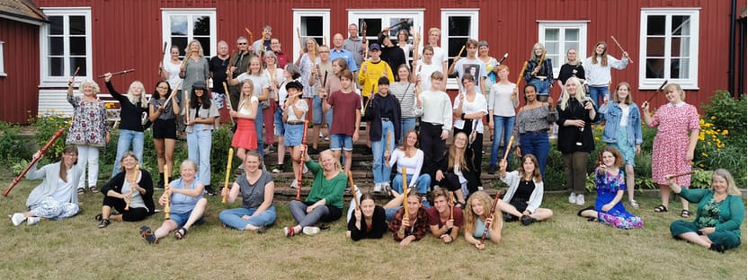
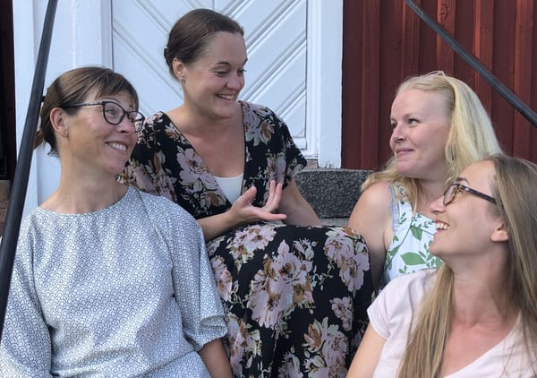

Välkommen till Glimåkra Blockflöjtsdagar 2022!
Anmälan är öppen!
Glimåkra Blockflöjtsdagar kommer i år att äga rum den 31 juli till 4 augusti. Ett fem dagar långt läger, som alltid på vackra Glimåkra Folkhögskola, fullt av ensemblespel, masterclasses, workshops, teknikpass, konserter, bad och lägeraktiviteter. Här får du undervisning och inspiration av erfarna blockflöjtister och pedagoger, och spela tillsammans med andra som delar intresse för blockflöjt!
Sommarens blockflöjtsdagar bjuder på fina gäster och konserter! Gästande lärare 2022 är:
Sarah Jeffery, engelsk blockflöjtist känd från youtube-kanalen Team recorder, som kommer att undervisa, hålla i workshop, masterclasses och ge konsert.
Sarah Jeffery (fotograf Claudia Hansen Photography)
Pia Brinkmann Stenhede, till vardags blockflöjtslärare i Lerum, som kommer att vara med under hela lägret.
Pia Brinkmann Stenhede
Även svenska Giovannikvartetten besöker oss med sin föreställning om kvinnliga barockkompositörer.
Giovannikvartetten
På Glimåkra Blockflöjtsdagar finns två kurser att välja mellan:
- Ensemblekursen. Denna kurs är för dig som är 12 år eller äldre. Här spelar vi i olika ensemblesammansättningar och på många olika flöjtstorlekar tillsammans. Vi vill att du som går denna kurs ska ha viss notläsningsvana. Anmälan till ensemblekursen
- Ensemble Course.This course is for those 12 years and older. Here we play in both small and large ensembles. You should be able to read sheet music at least at a basic level. Register for the ensemble course
- Solokursen. Solokursen vänder sig i första hand till dig som går en musikutbildning med blockflöjt eller är intresserad av att söka till en sådan i framtiden. Du bör vara på en nivå där du spelar hela sonater av t.ex. Telemann eller Händel, nutida repertoar, solokonsert, Brüggens etyder eller liknade. Antalet platser är begränsade och därför ska du till ansökan bifoga en kort video där du spelar max 8 minuter. På Solokursen spelar du kammarmusik samt får lektion i masterclass-form. En del av solokursdeltagarna kommer att få spela upp ett solo på masterclass för Sarah Jeffery, medan andra får spela upp ett ensemblestycke som man har arbetat med på kursen. Nytt för i år är att det också går att söka till Solokursen som ensemble. Går man kursen som ensemble får man spela upp med denna i masterclass. Anmälan solokursen
- Solo Course. The Solo Course has a limited number of places. This course is designed primarily for those who are currently enrolled, or intend to apply to, an advanced-level recorder education; therefore, applicants should, at a minimum, be familiar with playing entire sonatas, for example, Telemann, Handel, and Brüggens etudes, contemporary music, solo concerts or similar. The Solo Course consists of playing chamber music with other course participants as well as a masterclass lesson with Sarah Jeffery. This you can apply to the Solo Course as an ensemble. You will play a piece in the masterclass lesson with your ensemble. To apply for this course you need to send in a short video (max 8 min) that contains you/your ensemble playing a piece of your choice. Register for the solo course
- Besöksdag/Fortbildningsdag Ta chansen att uppleva Glimåkralägret som passiv deltagare under en dag. Dagen vänder sig till dig som är blockflöjtslärare och vill använda dagen som fortbildning eller dig som vill passa på att ta del av Sarah Jefferys workshops och undervisning, eller bara är allmänt nyfiken. Anmälan besöksdag/fortbildningsdag
 Glimåkra Folkhögskola
Glimåkra Folkhögskola

Deltagare 2021
Kostnaderna för anmälningsavgift, undervisning, mat och logi i dubbelrum 5 dagar:
- Anmälningsavgift - 500 kr (återbetalas ej)
- Ensemblekurs - 2500 kr
- Solokurs - 3000 kr
Anmälan är ännu öppen, stänger den 20 april eller senare.
Vid betalning: Flautissimos bankkonto i SEB 5675 33 027 00. Obs! Ange deltagarens namn på meddelande-raden
För betalning från utlandet:
IBAN : SE4850000000056753302700
BIC : ESSESESS
Föreningen Flautissimo
Skandinaviska Enskilda Banken
Kontakt: glimakrablockflojtsdagar@gmail.com
På vår sida på Facebook finns foton och klipp från tidigare kurser.
Vi förbehåller oss rätten att göra ändringar i kursplanerna ifall Covid -19 skulle förändra omständigheterna.
Välkomna till Glimåkra hälsar lärarna och arrangörerna Pia Loman, Sofia Nelson, Emelie Roos och Annie Lönngren.
Glimåkra Blockflöjtsdagar 2021 genomfördes i samarbete och med stöd av: Riksförbundet Unga Musikanter, Musik i Syd, Glimåkra Folkhögskola, Sparbanksstiftelsen Finn, Flautissimo, Malmö Stad samt Kulturens bildningsförbund